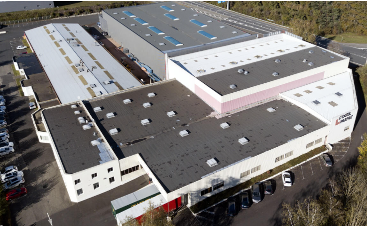

Entreprise : L'OUTIL PARFAIT – La Monnerie-le-Montel (63) | 2023, 2024, 2025
Pendant cette mission, ma responsabilité consistait à préparer les commandes de l'entreprise.
Lorsqu'une commande était reçue de la part d'un particulier ou d'un magasin, j'étais chargé
de récupérer les articles nécessaires dans les rayons correspondants.
Cette expérience m'a permis de renforcer ma réactivité en milieu professionnel et
d'améliorer ma collaboration avec les autres membres de mon secteur.
Entreprise : EARL PERISSEL – Luzillat (63) | 2020, 2021, 2022
Durant les mois de juillet sur trois années consécutives, j'ai eu l'opportunité de travailler au sein de cette entreprise. J'ai pu réaliser plusieurs tâches, telles que :
Ce travail m'a enseigné l'importance de la responsabilité. En effet, la cohésion de groupe est cruciale, car le retard d'une personne dans le travail peut affecter l'ensemble de l'équipe. J'ai acquis la capacité de travailler en équipe pour assurer la progression efficace du travail et garantir une récolte de qualité pour l'entreprise.
LIMOS (Laboratoire d'Informatique, de Modélisation et d'Optimisation des Systèmes) – Clermont-Ferrand (63)
Pendant ce stage, j'ai pu découvrir le monde de la programmation aux côtés d'un doctorant en mathématiques spécialisé dans la sécurité, plus précisément celle de WhatsApp. Au cours de cette expérience, j'ai eu l'opportunité de plonger dans le domaine de l'intelligence artificielle, en découvrant divers algorithmes et leur fonctionnement appliqué à l'IA. De plus, j'ai pu coder un mini-jeu vidéo et tester plusieurs types de code, y compris une reproduction graphique d'une maison.